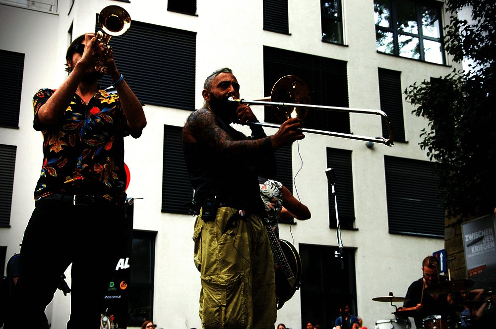

Ohne Göd ka Musi!
Straßenkunst lebt von der Interaktion mit dem Publikum, der künstlerischen Ausdrucksvielfalt und Improvisationslust. Diese Unmittelbarkeit macht den besonderen Charme von Straßenkunst aus. Bei jeder Darbietung entfaltet sich das Spiel mit dem Publikum aufs Neue, der jeweilige Auftrittsort wird zur temporären Bühne. Es gehört auch zur Straßenkunst mehr als den wohlverdienten Applaus zu spenden. Die Pflasterspektakel KünstlerInnen spielen für das Hutgeld des Publikums. Das Linzer Pflasterspektakel ist internationale Straßenkunst! Das Linzer Pflasterspektakel ist Einzigartigkeit und unbeschwerte Lebensfreude! Das Linzer Pflasterspektakel ist Begegnung und Freundschaft! Das Linzer Pflasterspektakel ist Kreativität und Spontaneität!